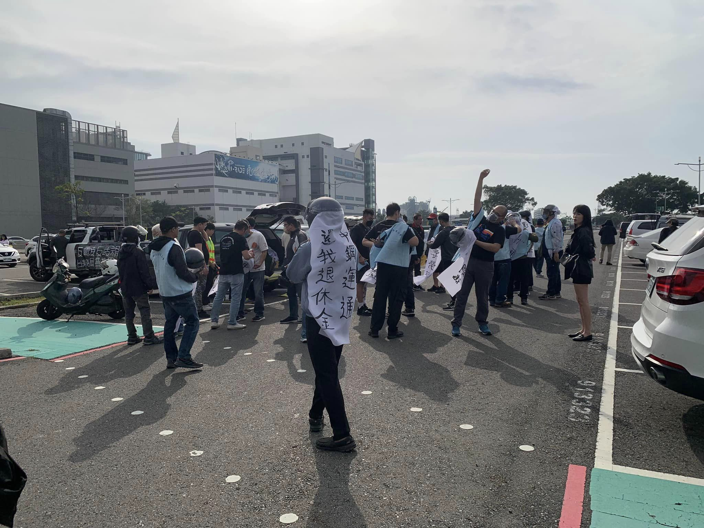
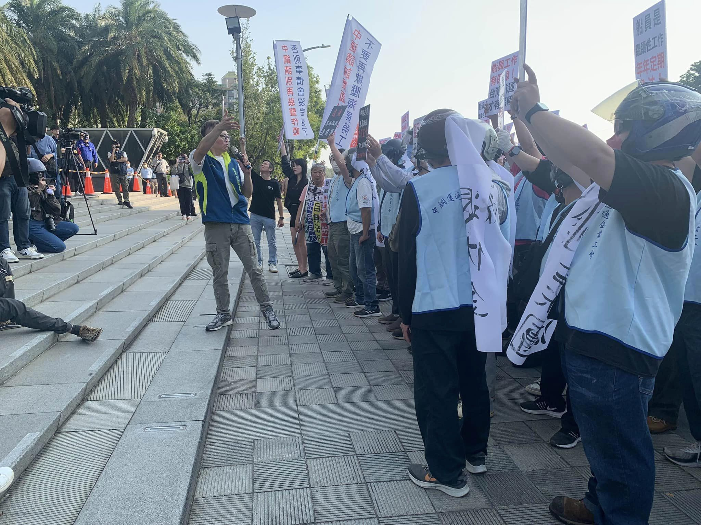
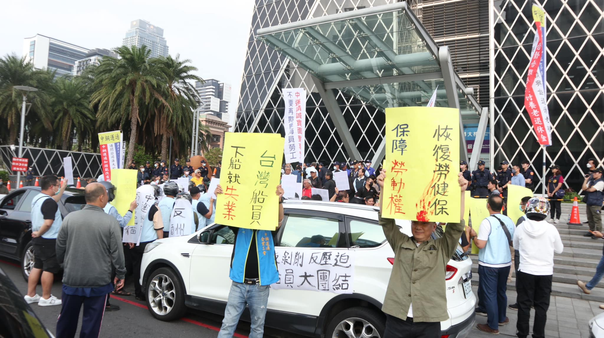
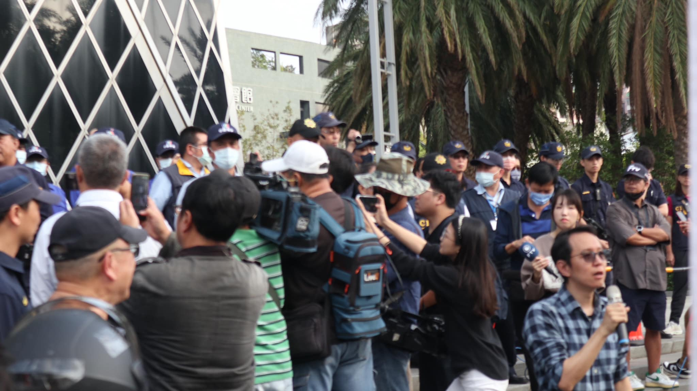

船員權益嚴重受損 要求資方停止打壓學生支持船員抗爭 爭取更好勞動條件
一個最近成立的學生組織「台灣監督企業青年行動」於11/18在中鋼運通台北辦公室 台北市信義路五段7號，101大樓外 前舉辦一場聲援中鋼運通船員的活動，並邀請各校的學生與關注勞動議題的學生組織一同加入聲援。我們指出，船員們所遇到的打壓不只會發生在他們身上，而是全台灣的勞動者都已經面臨到與即將會面臨到的處境，所以我們也廣泛地邀請社會大眾與更多地青年學生能夠站出來，一同聲援這場抗爭。

船員困境
作為學生，我們清楚地指出，船員遭遇的打壓族繁不及備載，包括要為了製造零工傷假象，迫使重傷船員不得申請職災、逼退台灣船員。而更過分的是，在今年七月資方為了打壓船員爭取其應得的權益的抗爭，竟切斷數百名船員的勞健保。

各校學生挺身而出 要求資方停止打壓
為了捍衛船員的權益，台灣監督企業青年行動與其他關心台灣勞權的學生組織舉辦了這場聲援活動，共同譴責中鋼運通資方的惡行惡狀，要求立即改善船員的勞動權益。

聲援行動要擴展，學生呼籲社會各界力挺船員
在聲援活動當日，各個學生組織的代表將發起短講，而後一齊唱由學生自行改編的歌曲，並共同宣誓將會在往後展開一系列行動、支持船員的權益。台灣監督企業青年行動表明，這次的抗爭只是開始，未來將讓學生的力量能夠投身於所有改善台灣勞動權益的議題當中，首先便是呼籲更多的學生與社會各界能夠關注或支持中運船員的抗爭，讓船員不再是孤立無援。

工人與學生互幫互助 共同開創美好未來
本次行動是近年來首次有獨立的學生組織站出來聲明要保衛勞權，台灣監督企業青年行動強調，勞工與學生需要互幫互助，對侵權的企業展開各式調查並維護勞工權益，才不會讓我們的勞動處境愈來愈惡化。這些支持勞權的青年學子相信，學生與勞工的團結合作，才是能促使社會變得更加的公平與正義的方法。
